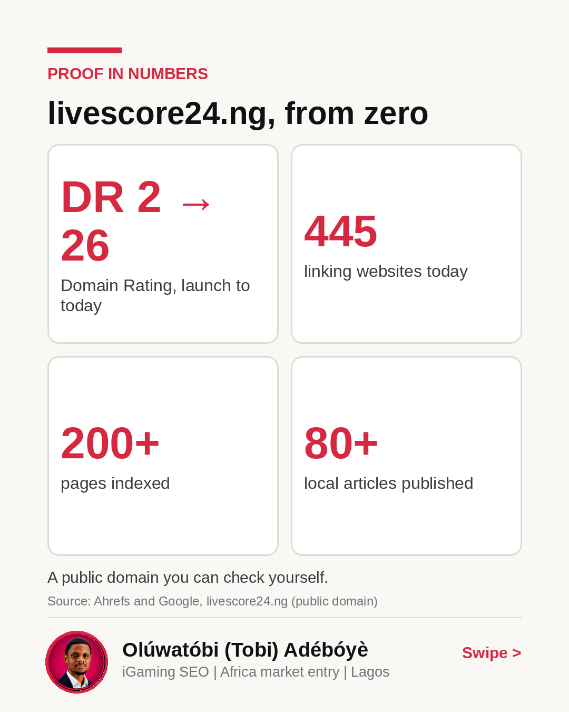
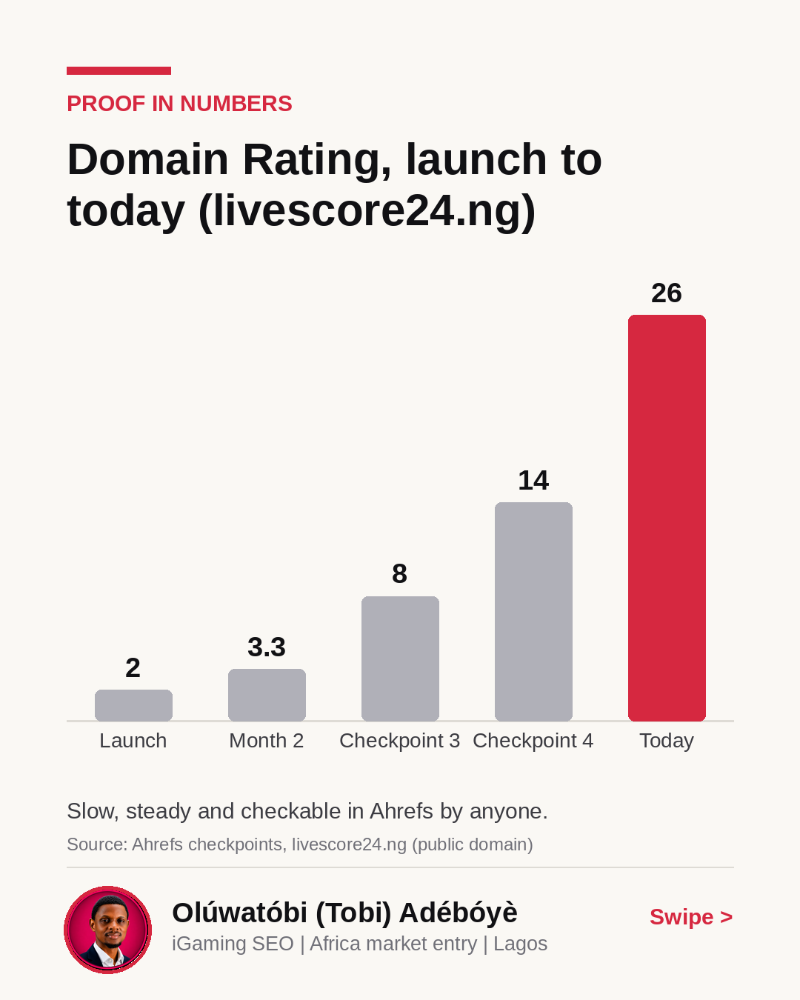
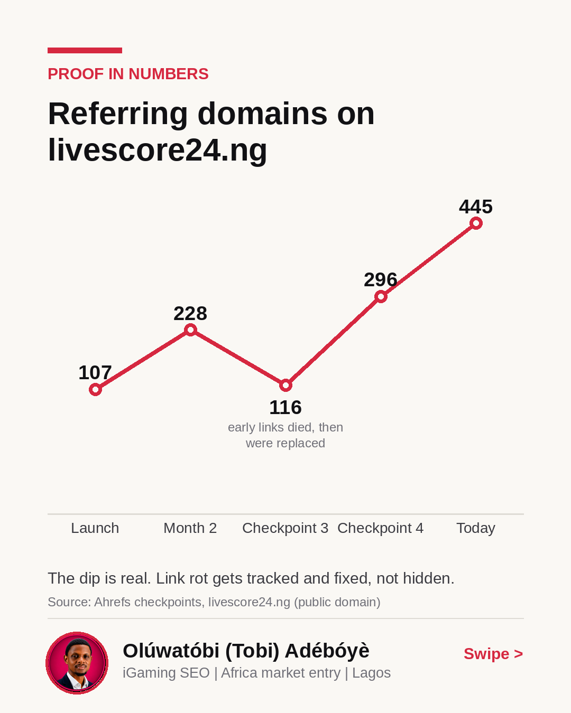
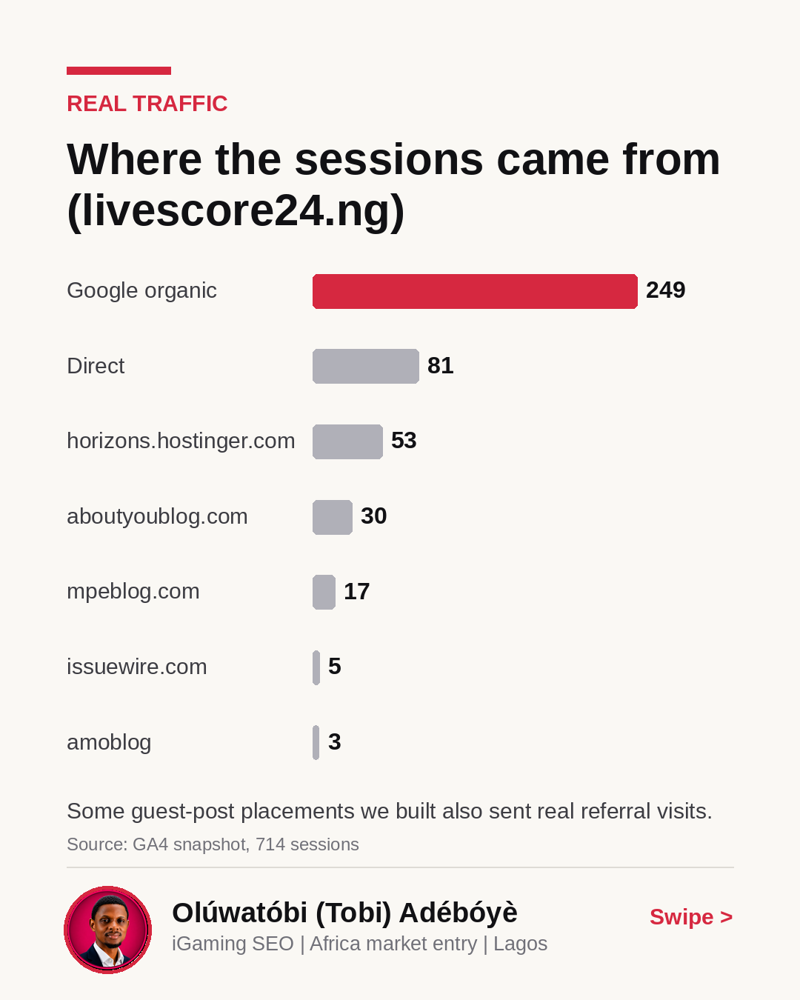
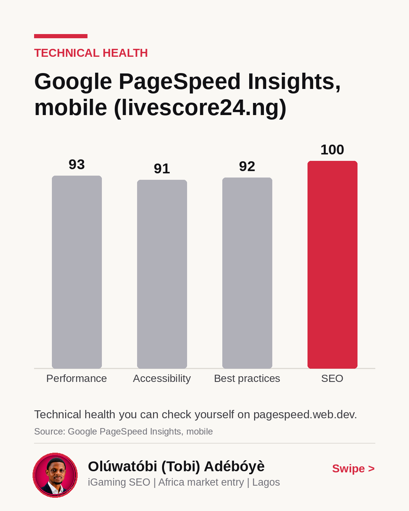

livescore24.ng in five charts
After month two, referring domains dropped from 228 to 116.
Early directory placements died or became not found when re-crawled. Instead of deleting them, my team kept the lost links in the log and focused on local search intent on livescore24.ng. Today it has 445 linking websites, DR 26, and a 100 mobile SEO score on PageSpeed Insights.
Swipe through to see the numbers behind the build.
When you enter a new market, how much early link churn do you tolerate before questioning the strategy?
livescore24.ng, from zero
A public domain you can check yourself.

Domain Rating, launch to today (livescore24.ng)
Slow, steady and checkable in Ahrefs by anyone.

Referring domains on livescore24.ng
The dip is real. Link rot gets tracked and fixed, not hidden.

Where the sessions came from (livescore24.ng)
Some guest-post placements we built also sent real referral visits.

Google PageSpeed Insights, mobile (livescore24.ng)
Technical health you can check yourself on pagespeed.web.dev.
